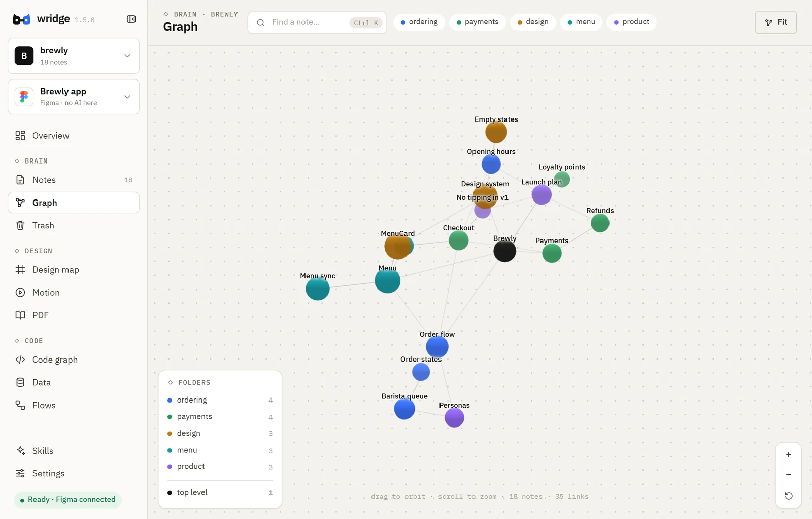
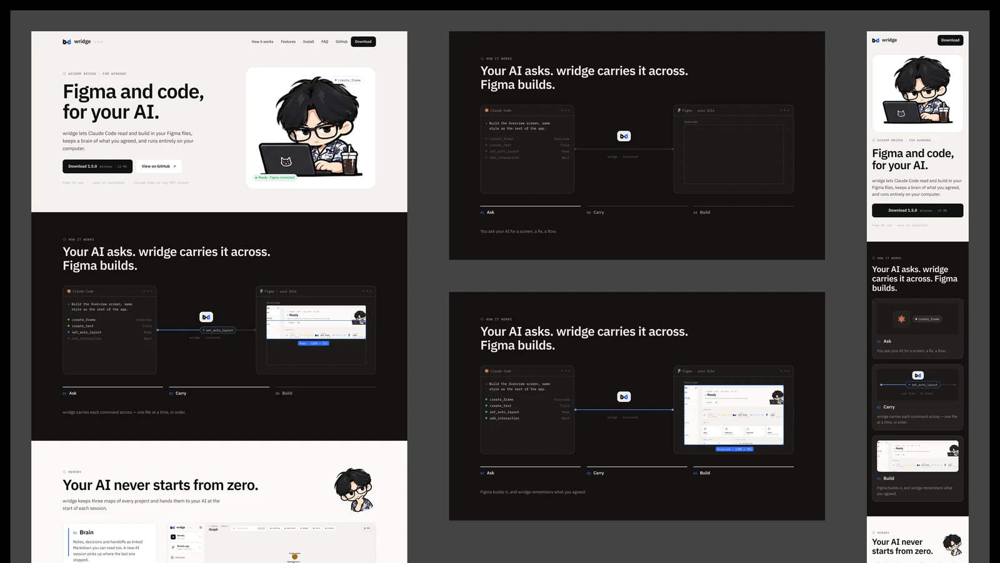
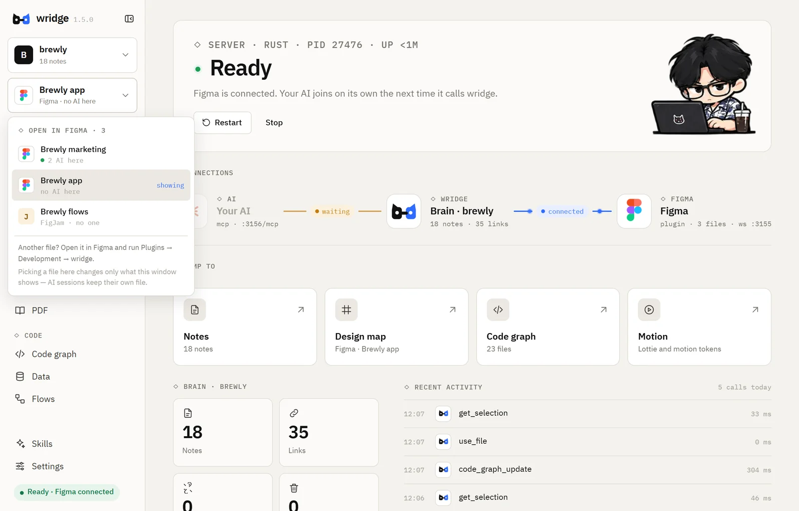

create_frame
01Ask
You ask your AI for a screen, a fix, a flow.
◇ Wisdom Bridge · for Windows
wridge lets Claude Code read and build in your Figma files, keeps a brain of what you agreed, and runs entirely on your computer.
Free to use · runs on localhost · Claude Code or any MCP client
◇ How it works
You ask your AI for a screen, a fix, a flow.
◇ How it works
You ask your AI for a screen, a fix, a flow.
wridge carries each command across — one file at a time, in order.
Figma builds it, and wridge remembers what you agreed.
◇ Memory
wridge keeps three maps of every project and hands them to your AI at the start of each session.

◇ And also
◇ Design
Claude Code reads and builds your screens, components, prototypes and motion — and checks which file is open before it writes.

◇ Together
Each AI session works in its own Figma file. Commands to one file take turns; different files run side by side.

◇ Install
Get the installer from GitHub Releases and run it. If Windows says the publisher is unknown, choose More info → Run anyway.
Open wridge — the cat in the tray — and press Start server.
In Figma desktop: Plugins → Development → Import plugin from manifest. wridge shows where the file is.
Settings → Connect an AI → Set up Claude Code. Start a new session and ask away.
◇ Privacy
wridge runs a small server on localhost. Your Figma files, notes and code never pass through anyone else’s server.
◇ FAQ
wridge isn’t signed with a paid certificate yet. Choose More info → Run anyway — it is the same file as on GitHub Releases.
Claude Code is set up in one click from wridge’s settings. Any client that speaks MCP over HTTP can connect to http://127.0.0.1:3156/mcp.
No. The plugin runs as a development plugin in the Figma desktop app, which works on the free plan.
You can read it on GitHub and use wridge for free, but the license doesn’t allow changing or redistributing it. Found a bug or have an idea? Open an issue.
Windows 10 / 11 · 64-bit · free to use